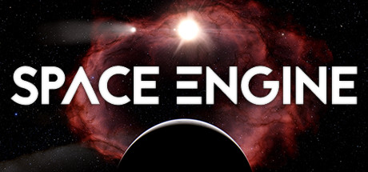
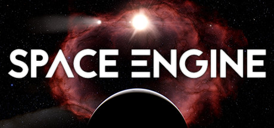

Introduction


Video games
For almost 25 years now video games have been a major part in shaping our culture, and has given gamers an opportunity to enjoy numerous genres of games including sci-fi and space exploration. This includes games like Kerbal Space Program, Terra Invicta, and Space Engine.
 

Anime
For a long time now anime has been a major pastime for many people in Japan, the United States and the rest of the world. These shows/movies come in many different genres, sci-fi is just one of many and includes many amazing animes like Astra: Lost in Space, Space Dandy, Cowboy Bebop, and many others.


History
Humans have always looked up into the night sky and dreamed about touching the stars and exploring our universe. In the latter half of the 20th century, rockets were developed that were powerful enough to overcome the force of gravity to reach orbital velocities, paving the way for space exploration to become a reality. Humanity has managed to land people on the Moon, land robots and probes onto Mars, and managed to send out satellites beyond Pluto's orbit.